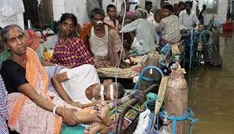

1.The doctor population in India is 1:1,500 when compared to an estimated 1:1,000 in China and 1:350 in the United States (USA). In urban India, the ratio is estimated at around 1:500 while rural India it is at around 1:2,500.
2There are about 9.2 lakh allopathic doctors in India and surprisingly about 7.5 lakh doctors practicing 'alternate' medicine (i.e. AYUSH, comprising of Ayurveda, Yoga, Unani, Siddha and Homeopathy), primarily in the rural sector.
3India has about 12,760 allopathic government hospitals, with a bed capacity of 5.76 lakh (Source - Ministry of Statistics and Programme Implementation, 2010). However, India has less than 1 bed per 1,000 population compared to a ratio of 3 for China and 3.1 for USA.
4.There is no comprehensive 'Hospitals registry' established in India, containing data of detailed healthcare facilities. And surprisingly, no standard or norms exist for clinical processes that need to be followed by the hospitals across India.
5.'Capitation fees' has made it difficult for genuine students to pursue the medical profession and could also be a cause for 'medical inflation'.
6.Lack of sanitation and proper hygiene is one of the root causes for illnesses to spread and the healthcare system is unaffordable for many.